JJ AA SS HH
// Strategic Designer | Systems Thinker
Student at SMI (B.Des) specializing in Business, Systems and Service Design, focused on identifying structural gaps and scalable solutions through systems research and AI-assisted development.
01 / EXPERIENCE
Business Advisor — Eurokids
Strategic Operations & Service Design
- Spearheaded an operational overhaul that increased customer ratings from 3.8 to 4.9 stars.
- Optimised internal workflows to enhance service delivery and parent satisfaction.
- Implemented communication protocols to build long-term community trust.
Systems Design Consultant — People's Trust
Community Enterprise Pathways
- Conducted systems analysis of Self-Help Groups (SHGs) to assess enterprise readiness.
- Proposed transition pathways for community groups into sustainable collective enterprises.
- Developed strategies to leverage capital across 27 SHGs to ensure structured growth.
02 / PROJECTS
Anatomy of iPhone
Led the development of the website and coordinated with a 20–23 person team to build a high-fidelity Framer site that visualized production-to-waste flows and e-waste impacts. Created clear causal and value maps to communicate systemic impact.
OTTR Desktop
Minimalist terminal-style academic planner inspired by Obsidian. Built with a focus on streamlined workflow and AI-assisted prototyping.
03 / SKILLS
 Figma
Figma
Framer Premiere Pro
Premiere Pro JavaScript
JavaScript TypeScript
TypeScript AI Assisted Workflows
AI Assisted Workflows© 2026 Jashith S Kumar.